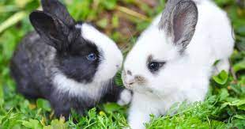
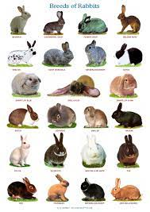

There are many types of rabbits from all over the world.A rabbit’s teeth never stop growing! Instead, they’re gradually worn down as the rabbit chews on grasses, wildflowers and vegetables — meaning they never get too long.
There are many shapes and sizes of bunnys.Rabbits’ eyes are on the sides of their head, meaning they can see almost all the way around them. This helps them to keep a close watch for predators while they’re going about their business!
A baby rabbit is called a kit, a female is called a doe and a male is called a buck.Rabbits are very social creatures that live in groups. They live in warrens — a series of tunnels and rooms that they dig underground.